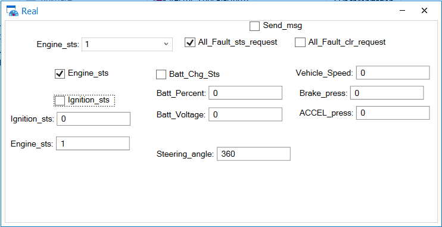
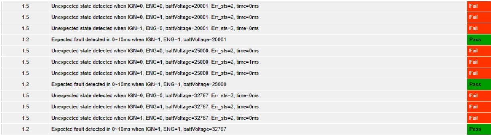
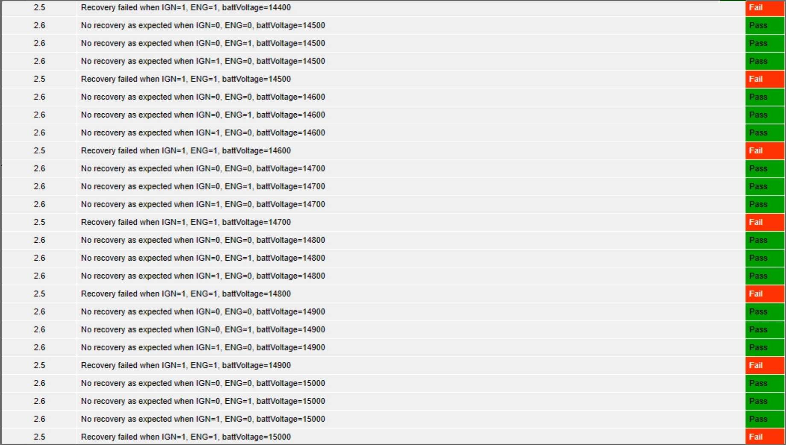
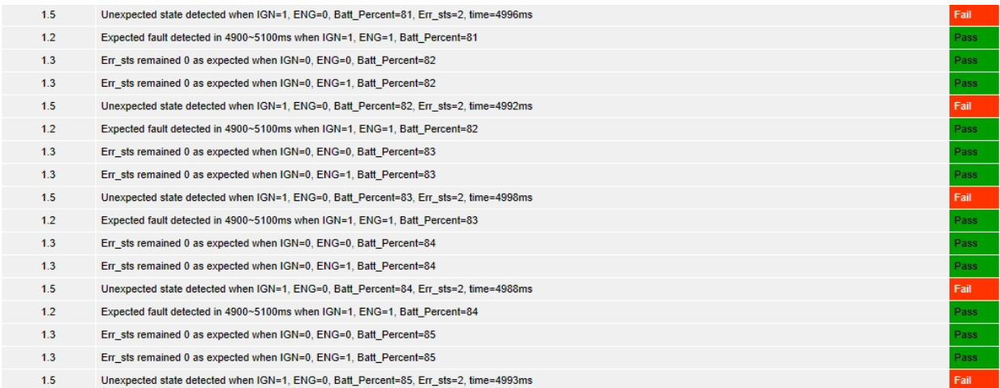
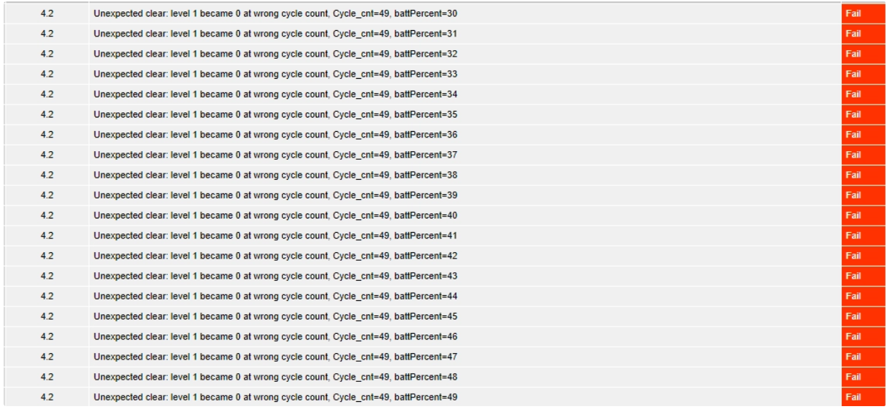
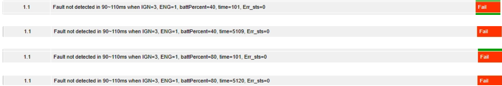
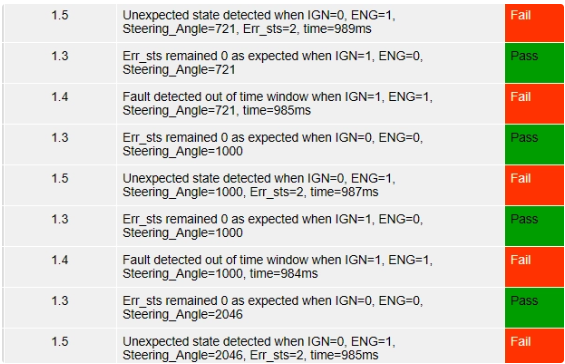
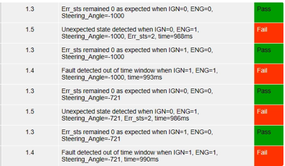

Problem
판정 시점이 잘못되면 정상 ECU도 실패로 보입니다
값만 비교하는 방식으로는 CAN 프레임의 도착 순서와 선행 조건을 놓칠 수 있어, Trace Timestamp와 판정 플래그의 전환 시점을 함께 확인해야 했습니다.
CASE 01 · VERIFICATION AUTOMATION
개인 프로젝트 · 2026.03.19–2026.03.23 · 기여 100%. CANdb와 CANoe 환경을 직접 구성하고, 요구사항 분석부터 테스트 설계·CAPL 자동화·Trace 분석·결함 문서화까지 전 과정을 담당했습니다.
Problem
값만 비교하는 방식으로는 CAN 프레임의 도착 순서와 선행 조건을 놓칠 수 있어, Trace Timestamp와 판정 플래그의 전환 시점을 함께 확인해야 했습니다.
Personal role
요구사항 분석, 테스트 설계, CANdb/CANoe 환경, CAPL 자동화, Trace 분석, 결함 문서화를 모두 수행했습니다.
Constraint
검증 결과 화면은 공개하지만, 교육 자료 보호를 위해 소스 저장소와 요구사항 캡처는 공개하지 않습니다.



참조 프레임보다 먼저 측정 타이머가 시작되는 순서 오류를 Trace로 좁혔습니다. 판정 값이 아니라 판정 시점을 먼저 고친 결정입니다.
Symptom
기존 흐름은 최신 Reference Frame 수신 여부를 보장하지 않은 채 측정을 시작해, 이전 프레임이 판정에 섞일 수 있었습니다.
Evidence
CAN Trace Timestamp와 CAPL 상태 플래그 전환을 대조해 측정 시작이 프레임 수신보다 앞선다는 원인을 확인했습니다.
Implementation
새 참조 프레임을 수신한 뒤에만 1 ms 타이머를 시작하도록 순서를 고정하고, 경계값·Timing 시나리오를 같은 기준으로 재실행했습니다.

정적 결함 4건과 동적 결함 11건을 식별·문서화했습니다. 이는 결함을 모두 수정했다는 의미가 아니며, 동적 결과도 캡처 보유 여부를 구분합니다.










정적·동적 결함을 식별하고 재현 조건을 기록했지만, 15건을 모두 수정했다고 주장하지 않습니다. 결과 캡처와 문서 기록의 증거 수준도 분리했습니다.

환경 구성과 자동화 실행, 결함별 판정 캡처로 검증 흐름을 재구성할 수 있습니다. 이 정적 포트폴리오에는 별도 데모 영상을 싣지 않았습니다.